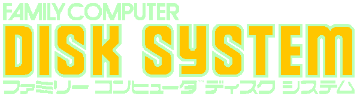

Nintendo Famicom Disk System
Released: 1986
22 games
The Family Computer Disk System, sometimes shortened as the Famicom Disk System or simply the Disk System, and abbreviated as the FDS or FCD, is a peripheral for Nintendo's Family Computer home video game console, released in Japan on February 21, 1986. It uses proprietary floppy disks called "Disk Cards" for data storage. Through its entire production span, 1986–2003, 4.44 million units were sold. The device is connected to the Famicom deck by plugging a special cartridge known as the RAM Adapter into the system's cartridge port, and attaching that cartridge's cable to the disk drive. The RAM adapter contains 32 kilobytes (KB) of RAM for temporary program storage, 8 KB of RAM for tile and sprite data storage, and an ASIC known as the 2C33. The ASIC acts as a disk controller for the floppy drive, and also includes additional sound hardware featuring a single-cycle wavetable-lookup synthesizer. Finally, embedded in the 2C33 is an 8KB BIOS ROM. The Disk Cards used are double-sided, with a total capacity of 112 KB per disk. Many games span both sides of a disk, requiring the user to switch sides at some point during gameplay. A few games use two full disks, totaling four sides. The Disk System is capable of running on six C-cell batteries or the supplied AC adapter. Batteries usually last five months with daily game play. The battery option is due to the likelihood of a standard set of AC plugs already being occupied by a Famicom and a television.
| Cover | Title | Year | Genre | Publisher | Developer |
|---|---|---|---|---|---|

|
11-in-1 Ball Series | Unknown | - | - | |

|
Ai Senshi Nicol | 1987 | Shooter | Konami Industry | Konami Industry |

|
Aliens: Alien 2 | Unknown | Shooter | - | Square |

|
All Night Nippon Super Mario Brothers | 1986 | Platform | Fuji TV | Nintendo |

|
Armana no Kiseki | 1987 | Action • Platform | Konami Industry | Konami Industry |

|
Aspic: Mahebiou no Noroi | 1988 | Action • Role-Playing | Bothtec | Xtalsoft |

|
Clu Clu Land | 1992 | Action | Nintendo | Nintendo |

|
Esper Dream | 1987 | Action • Role-Playing | Konami | Konami |

|
Fairy Pinball: Yousei Tachi no Pinball | 1987 | Pinball | Hacker International | Hacker International |

|
Final Command: Akai Yousai | 1988 | Shooter | Konami | Konami |

|
Kalin no Tsurugi | 1987 | Action • Role-Playing | DOG | Xtalsoft |

|
Kineco | 1986 | Puzzle | Irem | Tamtex |

|
Kineco II | 1987 | Puzzle | Irem | Tamtex |

|
Kinnikuman: Kinniku Ookurai Soudatsusen | 1987 | Action • Platform | Bandai | Sonata |

|
Moonball Magic | 1988 | Pinball | Disk Original Group | System Sacom |

|
Nazo no Murasamejou | 1986 | Action | Nintendo | Nintendo |

|
Sexy Invaders | 1990 | Shooter | Hacker International | Super Pig |

|
Smash Ping Pong | 1987 | Sports | Nintendo | Konami |

|
Super Mario Bros. 2 | 1986 | Platform | Nintendo | Nintendo R&D4 |

|
Super Yume Kojo | 1987 | Platform | Nintendo | Nintendo |

|
The Legend of Zelda 2: The Adventure of Link | 1987 | Action • Role-Playing | Nintendo | Nintendo |

|
The Legend of Zelda: The Hyrule Fantasy | 1986 | Action • Adventure | Nintendo | Nintendo R&D4 |